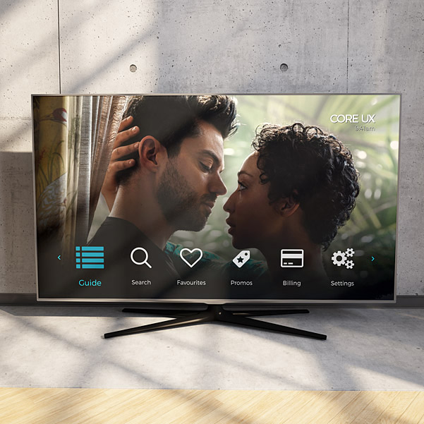

Information Architecture
Each project began with a sitemap and navigation structure.
Producing the architecture early helped identify potential navigation issues and ensured consistency throughout the product.
Television & Broadcast
A lightweight television user interface framework designed for digital television operators, prioritising simplicity, speed and ease of navigation.

Overview
Core UI was developed as a lightweight alternative to more feature-rich television platforms. The objective was to create a highly reusable interface that could be customised for multiple operators while remaining visually clean and easy to navigate.
The project focused on delivering a straightforward user experience optimised for remote-control interaction, fast navigation and broad customer deployment.
The challenge
Digital television operators often required modern user interfaces without the complexity and resource requirements of larger platforms.
The challenge was to create a system that:
The interface also needed to remain intuitive for users interacting exclusively with a remote control.
My role
As Lead UI/UX Designer I was responsible for:
I worked closely with engineering teams throughout delivery to ensure the final experience matched the design intent.
Understanding The Problem
The project explored how television interfaces could be simplified without sacrificing functionality.
Key considerations included:
The goal was to reduce complexity while retaining access to the features operators required.
Approach
Each project began with a sitemap and navigation structure.
Producing the architecture early helped identify potential navigation issues and ensured consistency throughout the product.
The interface adopted an icon-led navigation structure.
Users accessed major areas of the platform through a horizontal menu system controlled using directional navigation on the remote control.
Focus remained visually consistent throughout the experience.
Icons eased smoothly into place as users navigated, helping maintain orientation and context.
A key principle was reducing visual noise and presenting only what users needed at each stage of their journey.
Design System
Colour was used to communicate status, improve hierarchy and provide feedback to users.
Colours were documented within a 44-page styling guide distributed to engineering teams and customers.
Montserrat Light was selected for readability across HD and SD television environments.
Additional glyphs were manually created to improve character support across languages.
A reusable component library included:
These patterns provided consistency across the product.
A supporting icon library was created covering:
All assets were optimised for use on set-top box hardware.
The project included extensive implementation documentation.
A total of 17 supporting specification documents were produced for engineering, QA and client teams.
Key features
Traditional television interfaces often relied heavily on nested menu structures.
A clean icon-based navigation model provided direct access to major areas of the platform.
Users could move quickly between sections while maintaining awareness of their location.
Users needed access to programme information without interrupting viewing.
A lightweight information layer surfaced programme details and controls directly on screen.
Information became easier to access without disrupting content consumption.
Maintaining user interfaces directly in code slowed iteration and increased development effort.
GUI Generator enabled designers to build screens visually while automatically updating implementation code.
Improved collaboration between design and engineering while reducing manual effort.
Selected screens
A content-focused guide experience balancing browseability and information density.
An overlay designed to support content discovery and viewing decisions without disrupting playback.
A streamlined onboarding flow designed to simplify new device setup.
A scalable settings framework capable of supporting multiple operator requirements.
Impact
Core UI became a reusable television interface demonstrated and deployed across a wide range of operators and markets.
The platform was used as both a production-ready UI and a sales demonstration tool. Organisations involved in deployments and demonstrations included:
and numerous other operators worldwide.
One notable deployment supported Nigeria's digital switchover programme through the National Broadcasting Commission, where the platform was expected to be used on over one million set-top boxes.
What I Learned
If I revisited the project today I would:
Gallery